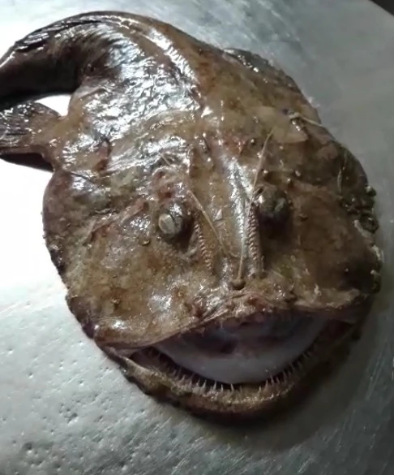
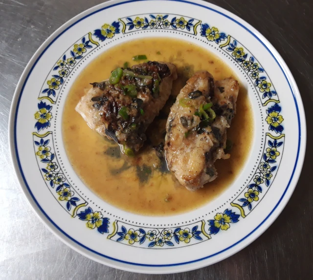

Fried Anglerfish fillet

This is a simple light-flavoured recipe. Anglerfish (I’m referring specifically to the ‘monfish/sea-devil’ variant) meat is mild, absorbing the butter and subtle flavours of the herbs. Preparing the anglerfish is an involved process that I’ll try and explain to the best of my abilities but watching someone do it would be more then helpful.
Ingredients
- 1 Anglerfish
- Butter, enough to fry with
- Chives or green onions
- Marjoram, fresh herbs are preferable
Directions
Preparing the fish
- Turn the creature on its back. With a sharp and preferably short-bladed knife make an incision from the anus to just between the two small fins under the head. This is best done by inserting the knife blade tip facing up while putting force upwards and moving towards the head, letting gravity do the work. This helps to avoid puncturing the organs.
- Remove the organs. Gently pull and cut the membrane that connects each to the rest of the body.
- Make an incision around the mouth (the hard ‘lips’), turn the fish around and do the same to that side.
- Start to slowly but firmly pull back the skin cutting whenever there is resistance as you make your way towards the tail.
- Once you have removed the skin, flip it back onto its back and cut off the thin flabs of meat of its underside and fins from the body. At this point there should be a clear distinction between the body and the larger head. Behead the animal.
- With a filleting knife, fillet the meat from the backbone and remove the tail.
- You should be left with 2 long strips of meat. Cut each in half.
Cooking
- In a pan on medium heat, melt a good amount of butter and place the fillets inside. The goal here is to sear the meat to get that light crust. Flip until all sides have turned the ‘golden brown’ color.
- Add the herbs, just enough to cover the fillets, salt and pepper too if desired and cover with the lid on low heat until fully cooked. Time here varies but it can be anywhere between 5-10 minutes.
- Enjoy. This goes well with steamed vegetables. Or potatoes to soak up the butter.

Contribution
Shou, website